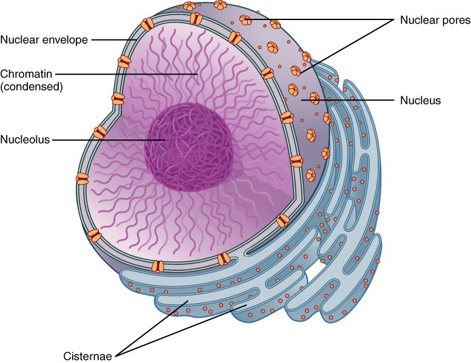
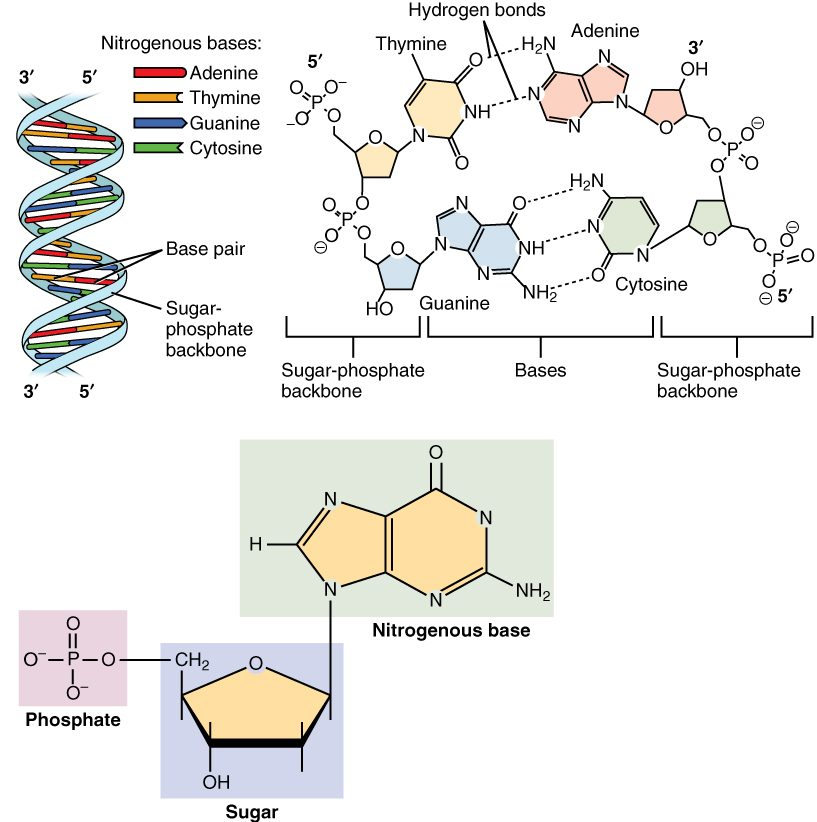
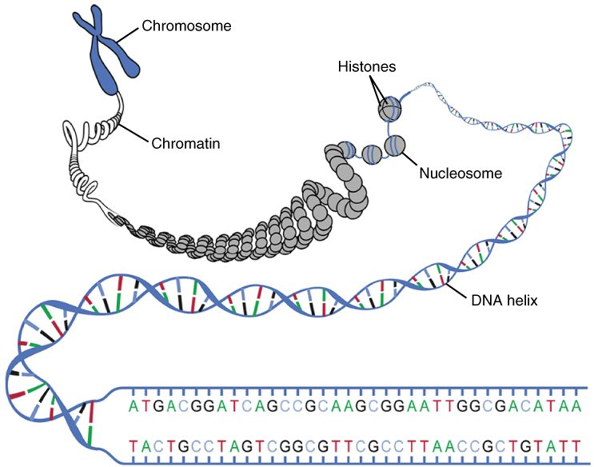
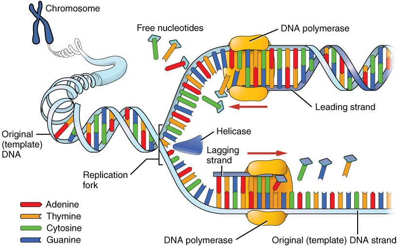

Stretch out the DNA from one of your cells and it reaches about 2 meters. Yet it fits inside a nucleus about 6 micrometers across, and your cell copies all of it, with almost no mistakes, every time it divides. This page covers DNA structure, genes and chromosomes: where your DNA sits, how it is built, how it is packed, what a gene is, and how a cell copies its DNA.
The nucleus: where your DNA lives
Start with a blood test. A lab can pull DNA out of a tube of your blood, but not from the red blood cells, which make up most of the cells in the tube. Mature red blood cells have no nucleus, so they carry no DNA. The DNA comes from the white blood cells. That one fact tells you where DNA lives: in the nucleus.
The nucleus (nucle- = kernel, the "pit" at the center of a fruit) is the largest organelle in most of your cells. Most cells have one. A few have none, like mature red blood cells, and some very long cells have many. Look at Figure 1 as you read the three parts below.
- The nuclear envelope is the boundary. It is two lipid bilayers, one inside the other. The outer bilayer is continuous with the rough endoplasmic reticulum. A mesh of intermediate filaments lines the inner face and holds the nucleus in shape.
- Nuclear pores are channels through both bilayers, each built from many proteins. A nucleus has thousands of them. Water, ions and other small molecules pass freely. Large molecules, such as proteins, pass only when they carry a tag that the pore proteins recognize.
- The nucleolus (-olus = little: "little nucleus") is a dense region inside the nucleus with no membrane around it. It forms around the stretches of DNA that code for ribosome parts. Here the cell assembles the two halves of each ribosome, which then leave through the nuclear pores.

DNA is a double strand of nucleotides
You met nucleic acids in the chemistry chapter. DNA (deoxyribonucleic acid) is the one that stores your inherited information. It is a polymer of nucleotides. Each nucleotide has three parts:
- a phosphate group
- a five-carbon sugar called deoxyribose (de- = removed, oxy- = oxygen: it lacks one oxygen atom that the sugar ribose has)
- one of four nitrogenous bases: adenine (A), thymine (T), guanine (G) or cytosine (C)
Covalent bonds join the sugar of one nucleotide to the phosphate of the next. That makes a long strand with a repeating sugar-phosphate backbone. The bases stick out to the side, one per nucleotide. The order of the bases along the strand is the information.
DNA has two such strands. The bases of one strand face the bases of the other, like the rungs of a ladder. The ladder then twists into a spiral, the double helix (helix = spiral). The two backbones run in opposite directions. Chemists label the two ends of a strand 5′ and 3′ ("five prime" and "three prime"). One strand runs 5′ to 3′ in the direction the other runs 3′ to 5′. Biologists call this antiparallel. You will see why it matters when the cell copies DNA. Figure 2 shows the helix, the paired bases and one nucleotide.

Base pairing: A with T, G with C
The bases do not pair at random. Base pairing follows one rule: A pairs with T, and G pairs with C. Two things enforce it.
- Size. A and G are purines, with two rings. T and C are pyrimidines, with one ring. Every rung is one purine plus one pyrimidine, so every rung is the same width and the helix stays even.
- Hydrogen bonds. A and T line up to form two hydrogen bonds. G and C line up to form three. A with C, or G with T, line up poorly. They form fewer or badly placed hydrogen bonds and bend the helix, so the correct pairs are strongly favored.
Because of the rule, the two strands are complementary: read one strand and you know the other. Hydrogen bonds are weak one at a time, so the strands can be pulled apart without breaking either backbone. Millions of them together hold the helix firmly. A stretch rich in G–C pairs has more hydrogen bonds per rung, so it takes more energy to separate.
Worked example 1: write the partner strand. One strand reads 5′-ATGCCA-3′. What is its partner?
- Pair each base: A→T, T→A, G→C, C→G, C→G, A→T. That gives TACGGT.
- Label the ends. The strands are antiparallel, so the partner runs the other way: 3′-TACGGT-5′.
Worked example 2: use the pairing rule on percentages. A sample of DNA is 30% adenine. What percentage is guanine?
- Every A has a T partner, so T = A = 30%.
- A + T = 60%, so G + C = 100% − 60% = 40%.
- Every G has a C partner, so G = C. G = 40% ÷ 2 = 20%.
Packing DNA: histones, nucleosomes and chromatin
Your cells hold two full sets of DNA, about 6.2 billion base pairs. Each base pair adds about 0.34 nanometers of length, so the total is about 2 meters. It fits in the nucleus because proteins wind it up.
Histones are small proteins rich in amino acids that carry a positive charge. The phosphate groups on DNA's backbone carry a negative charge. Opposite charges attract, so DNA wraps tightly around histones.
- About 147 base pairs of DNA wrap nearly twice around a core of eight histone proteins. The core plus its wrapped DNA is a nucleosome (nucleo- = nucleus, -some = body). A short linker of DNA runs to the next nucleosome, so an unfolded stretch looks like beads on a string.
- The string of nucleosomes coils and folds into a thicker fiber. DNA together with the proteins packing it is called chromatin (chromat- = color, -in = substance; it takes up stain strongly under the microscope).
- Chromatin folds into loops attached to a protein framework. When a cell prepares to divide, it compacts the loops much further into short, thick, visible chromosomes (chromo- = color, -some = body).
Figure 3 shows the levels, from the double helix to the condensed chromosome. Packing is not uniform. Loosely packed chromatin is open to enzymes that read the DNA. Tightly packed chromatin keeps its DNA largely shut away.

Chromosomes and chromatids
A chromosome is one long DNA molecule with its packing proteins. Most of your body cells have 46 chromosomes, arranged in 23 pairs. You got one chromosome of each pair from each parent. Egg and sperm cells carry just one set of 23.
- Autosomes (auto- = self, -some = body) are the 22 pairs numbered 1 to 22, roughly from largest to smallest. Both members of a pair carry the same genes.
- The sex chromosomes are the 23rd pair: two X chromosomes (XX) in most females, or one X and one Y chromosome (XY) in most males. The X is large and carries several hundred genes. The Y is much smaller and carries far fewer.
Before a cell divides, it copies every chromosome. The two copies stay joined. Each copy is now called a chromatid (-id = offspring), and the two identical copies are sister chromatids. They are held together most tightly at a narrowed region called the centromere (centro- = center, -mere = part). That is what gives a copied chromosome its familiar X shape.
Count carefully. A copied chromosome is still one chromosome, even though it contains two chromatids. So a cell that has copied its DNA still has 46 chromosomes, but 92 chromatids.
| Chromatin | Chromosome | Chromatid | |
|---|---|---|---|
| What it is | DNA plus its packing proteins, in general | One whole DNA molecule plus its proteins | One of the two copies in a copied chromosome |
| How many DNA molecules | All of the cell's DNA | One (two once copied) | One |
| When you can see it | Always present; looks like fine threads between divisions | Visible as a compact body when the cell divides | Exists only after copying and before the copies separate |
| Number in one of your body cells | Not counted | 46 | 92 after copying; 0 before |
Genes and the genome
Think of the gene that codes for the sodium–potassium pump in your cell membranes. It is one stretch of DNA, a few thousand base pairs long, somewhere on one chromosome. Its base sequence holds the recipe for one of the pump's proteins.
A gene (gen- = to produce) is a segment of DNA whose base sequence codes for a working product. For most genes, the product is a protein. Some genes code for other working molecules, which you will meet in the next topic. Each chromosome carries hundreds to thousands of genes, strung along it with long stretches of DNA in between.
Your genome (gene + -ome = the whole set) is all of the DNA in one set of your chromosomes. It is about 3.1 billion base pairs and holds roughly 20,000 protein-coding genes. The parts that code for protein make up only about 1–2% of it. Much of the rest controls when genes are used, holds up chromosome structure, or has no known job.
Almost every cell in your body carries the same genome. Your liver cells and your skin cells have the same genes. They differ because each uses a different subset of those genes, which is the subject of the next topic.
DNA replication: copying before dividing
A cell that divides must first make a full copy of its DNA, so each of the two new cells gets a complete set. This copying is DNA replication (replicat- = to fold back, to repeat). It uses the base-pairing rule: each old strand serves as the template for a new partner strand. Figure 4 shows the process at one fork.
- Unwinding. Helicase (helic- = spiral, -ase = enzyme) moves along the helix and breaks the hydrogen bonds between paired bases. The two strands separate into a Y-shaped fork, and each strand's bases are exposed.
- Pairing. Free nucleotides in the nucleus pair with the exposed bases by the rule: A with T, G with C.
- Linking. DNA polymerase (poly- = many, mer- = part, -ase = enzyme) joins each incoming nucleotide to the growing new strand with a covalent bond. It can only extend an existing strand, so another enzyme first lays down a short starter piece.
- Direction. DNA polymerase adds nucleotides to one end of a strand only. Because the two old strands are antiparallel, one new strand grows smoothly toward the fork. The other grows away from the fork in short pieces, which an enzyme called DNA ligase (lig- = to tie) then joins.
- Proofreading. DNA polymerase checks each new base. If it has added a wrong one, it removes it and tries again. Other repair enzymes catch most of the errors it misses.
- Result. Two double helices, identical in sequence. Each one has one old strand and one new strand. This is called semiconservative replication (semi- = half): each copy conserves half of the original.

Two numbers show how well this works. Your DNA is so long that replication starts at tens of thousands of points at once, and the whole genome is still copied in several hours. After proofreading and repair, about one base in a billion ends up wrong. So each full copy of your DNA carries only a handful of new errors.
Putting it together
Structure explains each step. Two complementary strands mean each strand can rebuild the other. Weak hydrogen bonds between strands mean helicase can open the helix without damaging the backbones. Positive histones and negative DNA mean 2 meters of DNA can pack into a nucleus. And copying before division means a cell ends up with two identical sister chromatids per chromosome, ready to be shared out. The next topic follows what happens when a cell reads a gene to build a protein.